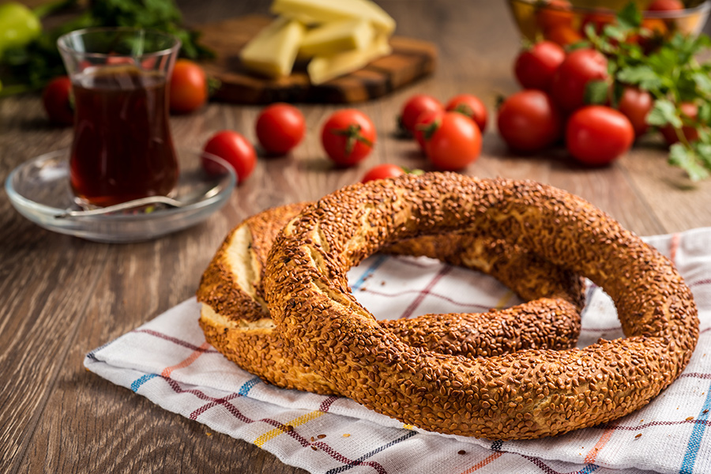

Home
Simit

Description
A Turkish breakfast favorite, Simit is a circular bread, typically encrusted with sesame seeds or, less commonly, poppy, flax or sunflower seeds, found across the cuisines of the former Ottoman Empire, Turkey.
Ingredients
- 1 cup warm water
- 1 tablespoon active dry yeast
- 1 tablespoon sugar
- 1 teaspoon salt
- 3 cups all-purpose flour
- 1/2 cup olive oil
- 1/2 cup molasses
- 1/2 cup water
- 1 cup sesame seeds
Steps
- In a small bowl, mix warm water, yeast, and sugar. Let sit until frothy, about 10 minutes.
- In a large bowl, combine flour and salt. Add yeast mixture and olive oil. Mix until dough comes together. Knead until smooth, about 10 minutes. Cover and let rise until doubled, about 1 hour.
- Preheat oven to 375 degrees F (190 degrees C). Line a baking sheet with parchment paper.
- Divide dough into 12 pieces. Roll each piece into a rope, about 12 inches long. Shape into a circle, overlapping ends by 1 inch. Place on prepared baking sheet.
- In a small bowl, mix molasses and water. Brush over simit. Sprinkle with sesame seeds.
- Bake in preheated oven until golden brown, about 20 minutes. Cool on a wire rack.